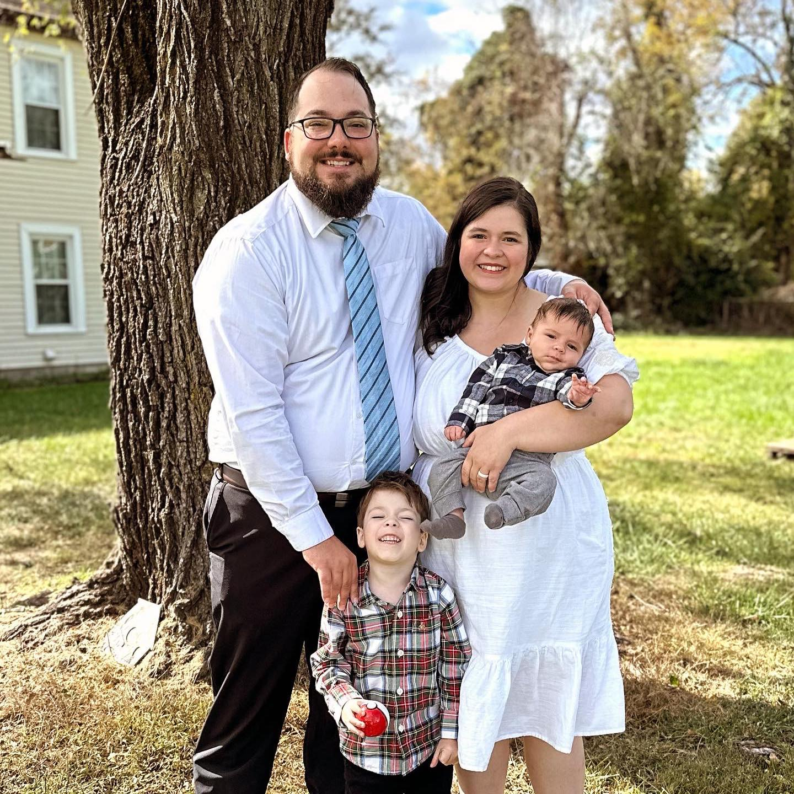

Jalielle Curtis | WDD 130
Hello! My name is Jalielle Curtis! I am a 27 year-old mom of 2 boys, Jonas (4) and August(7 months), and two pups, Luna (2) and Bruder (4), living in Roanoke, VA. I don't often have free time as a swim instructor, piano teacher and full time mom, but when I do, I enjoy crocheting and reading! We love life together as a family and often look for great movies to watch or food to make and eat. My husband works hard as a Fleet Manager for our local Portable Sanitation company and we couldn't be more grateful for his hard work and great job. We also are looking forward to starting a garden in our large yard this summer. We will be growing corn, peas, squash, blackberries, tomatoes and green beans! I originally grew up in Bountiful, UT but moved out to Virginia in 2020 during the pandemic. We have loved living here for the past four years and are looking forward to many more.